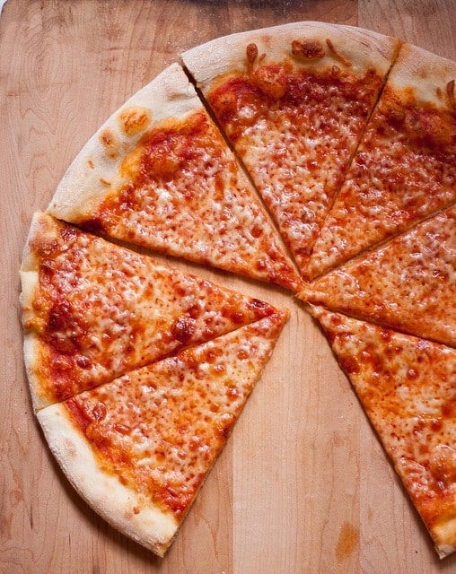

Pizza Recipe

Description
This is a recipe for the best food ever. Please use carefully.
Ingredients
- 3 cups bread flour
- 2 Tablespoons and 1 teaspoon sugar
- 1/2 teaspoon yeast
- 1 and 1/3 cups ice water
- 1 Tablespoon vegetable oil
- 2 and 1/2 teaspoons table salt
- 6 Tablespoons semolina flour or cornmeal
- 1 Tablespoon extra-virgin olive oil
- 28-ounce can of whole peeled tomatoes
- 1 large garlic clove minced
- 1 teaspoon dired oregano
- 1/2 cup finely grated Parmesan cheese 1 ounce
- 2 cups shredded whole milk mozzarella 8 ounces
Steps
- Make the dough:
- In a food processor, pulse together the flour, sugar, and yeast. With the food processor running, slowly pour in the water until the dough comes together.
- Let the dough rest for 10 minutes.
- Add the oil and salt to the food processor and process for 1 minute
- Shape the dough into a smooth ball and place it in a bowl greased with nonstick cooking spray.
- Cover the bowl with plastic wrap and chill the dough for 24 hours or up to 3 days
- Make the sauce:
- Drain the tomatoes in a fine-mesh strainer and place them in a blender.
- Add the remaining ingredients and blend until smooth
- Bake the pizza:
- Preheat the oven to 500 degrees F.
- Place a pizza stone on the second-highest rack in the oven.
- Take the dough out of the refrigerator and divide it in half.
- Shape each half into a smooth ball and place it on a lightly greased baking sheet.
- Cover the dough balls loosely with greased plastic wrap and let them stand for 1 hour.
- Flatten one of the dough balls into an 8-inch disk on a lightly floured countertop.
- Leave a 1-inch outer edge that is slightly thicker.
- Gently stretch the dough into a 12-inch circle.
- Place the dough on a pizza peel dusted with semolina flour.
- Stretch the dough ot a 13-inch circle.
- Spread half of the pizza sauce over the dough, leaving a 1/2-inch border around the edges.
- Sprinkle with 1/4 cup of Parmesan cheese and 1 cup of shredded mozzarella cheese.
- Open the oven door and quickly slide the pizza onto the hot pizza stone.
- Bake until the pizza begins to brown and the cheese is bubbly about 10-12 minutes.
- Remove the pizza from the oven and let it cool for 5 minutes before slicing.
- Repeat with the remaining dough, sauce, cheese, and semolina flour.